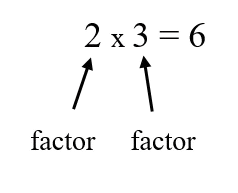

We get a multiple of a number when we multiply it by another number. Such as multiplying by 1, 2, 3, 4, 5, etc, but not zero. Just like the multiplication table.
Multiples of 4 = M4 = 0,4,8,12,16,20,24,28,32….
What is common multiple?
When we list the multiples of (for example) 4 and 5,
the common multiples are those that are found in both
lists:
Multiples of 4 = M4 = 0,4,8,12,16,20,24,28,32….
Multiples of 5 = M5 = 0,5,10,15,20,25,30,35…
So, the common multiples of 4 and 5 are:
20, 40, (and 60, 80, etc ..., too)
Now, are you ready to know what is LCM?
It is the smallest positive number that is a multiple of two or more numbers.
(15 is a multiple of both 3 and 5, and is the smallest number like that.) So, LCM (3,5) = 15
Factors are numbers we can multiply together to get another number:
A number can have many factors:
Factors of 20 = 1, 2, 4, 5, 10, 20
because 2 × 10 = 20 and 4 × 5 = 20…
Then the common factors are those that are found in both lists:
-Factors of 12 and 20:
Factors of 12 are 1, 2, 3, 4, 6 and 12
Factors of 30 are 1, 2, 3, 5, 6, 10, 15 and 30
It is simply the largest of the common factors.
In the example above, we noticed that the common factors of 12 and 30 are 1, 2 and 6,
well the GCF is then 6 because it should be the GREATEST.